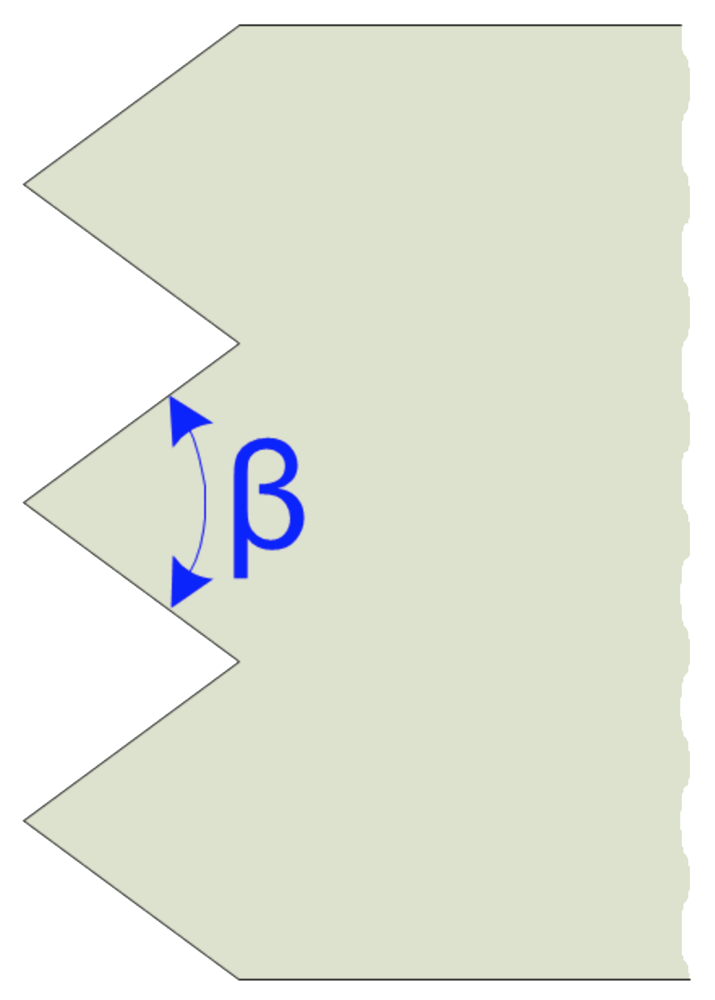

|
Bushing Chisel
|
|

Guidelines shown below are for the cutting edge angle.
Frequent sharpening is recommended to maintain the tool's shape, and is needed for safe performance of the tool.
|
General Guidelines
|
| Material |
 |
Notes |
Softer stone
(e.g., chalk, soapstone, & pumice) |
N/A
|
Use a frosting tool |
General stone
(e.g., limestone & marble) |
N/A
|
Use a frosting tool |
Harder Stone
(e.g., granite & basalt) |
75° - 90°
|
|
Notes & Comments
- Sharpening angles
- Use larger angles for roughing out.
- Use sharper angles for finishing cuts.
- Special Notes for Tools with Carbide Inserts
- Do not cool by dipping in water : this will generate shocks in the metal, and cause the carbide to crack.
- When sharpening, one of the following options is recommended.
- Leave corners slightly beveled, or
- Edge up on the final grind.
- Leave the final 1.5 mm (1/16 inch) unground. This is because the rough grinding of the carbide introduces cracks and makes the edge more brittle. By stopping short of the edge, this is minimized.
- Then, use a high grit wheel should be used to make the edge smooth with minimal cracks.
- A very high grit grindstone should be used if a very smooth carving surface is needed, or if the material is very soft.
- Special thanks to Oleg Lobykin at StoneSculpt - Custom Stone Carving for providing the guidance.